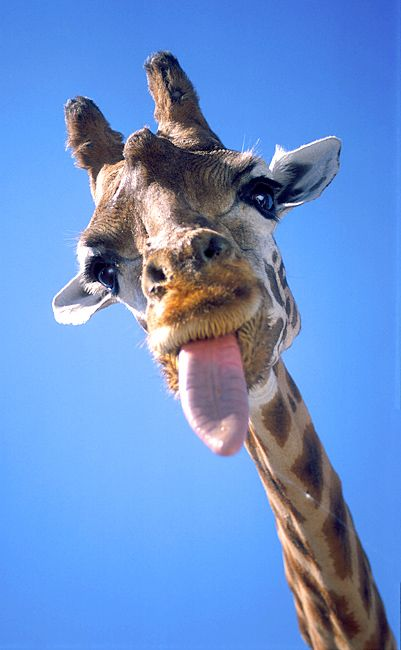

Männchen (Bullen) werden bis zu 6 Meter hoch und wiegen durchschnittlich rund 1600 Kilogramm. Weibchen (Kühe) werden bis zu 4,5 Meter hoch und wiegen etwa 830 Kilogramm bei einer Schulterhöhe zwischen 2 und 3,5 Metern.
Der Hals der Tiere ist außergewöhnlich lang. Wie bei fast allen Säugetieren besteht die Halswirbelsäule gleichwohl aus nur sieben Halswirbeln, die aber stark verlängert sind. Der Hals wird von einer einzigen, sehr starken Sehne in einem Winkel von etwa 55° gehalten. Die Sehne verläuft vom Hinterkopf des Tieres bis zum Steiß und ist für den „Höcker“ zwischen Hals und Körper verantwortlich. Der Ruhezustand hält Hals und Kopf in der aufrechten Position; um den Kopf nach unten zu bewegen, z. B. zum Trinken, muss das Tier Muskelarbeit aufbringen. Die Zunge kann 50 Zentimeter lang werden. Sie ist zum Greifen befähigt und im vorderen Bereich zum Schutz vor Sonnenbrand stark pigmentiert.
Das Muster des Haarkleids besteht aus dunklen Flecken, die sich von der helleren Grundfarbe abheben. Je nach Unterart variieren Form und Farbe der Flecken. Die Unterseite ist hell und ungefleckt. Die Flecken dienen der Tarnung und der Regulierung der Körpertemperatur. Im Unterhautgewebe verläuft um jeden Flecken eine ringförmige Arterie, die Äste in den Flecken hinein aussendet. Über eine stärkere Durchblutung kann das Tier so mehr Körperwärme abgeben und ist nicht auf Schatten angewiesen.
